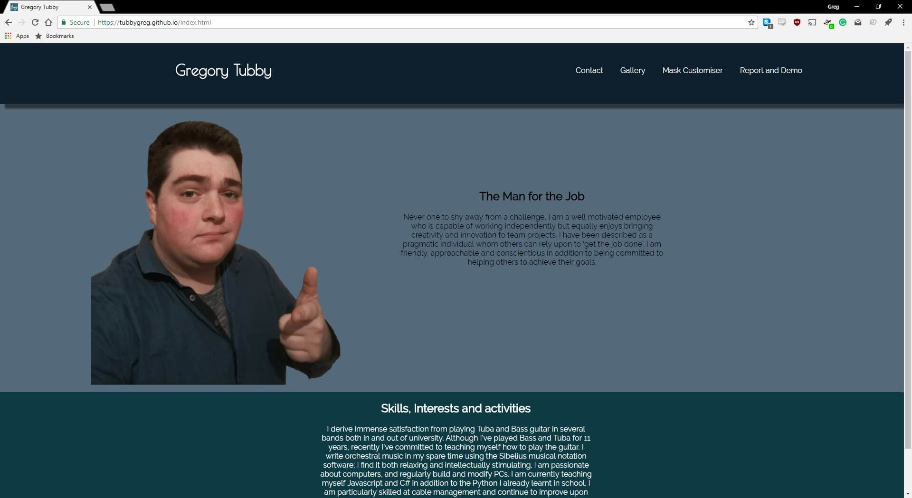
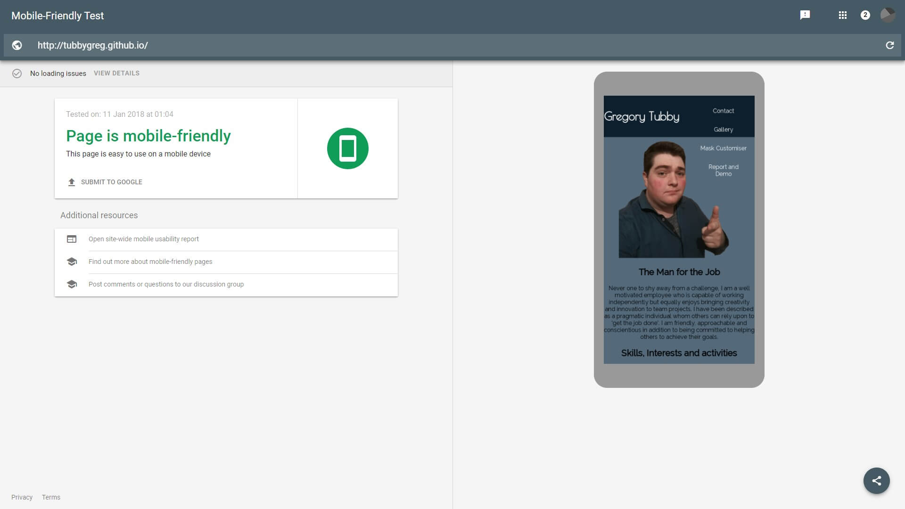
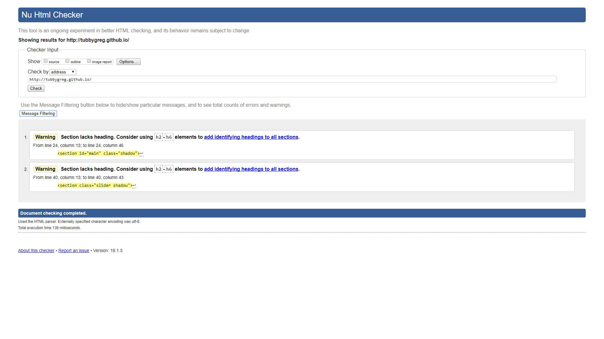
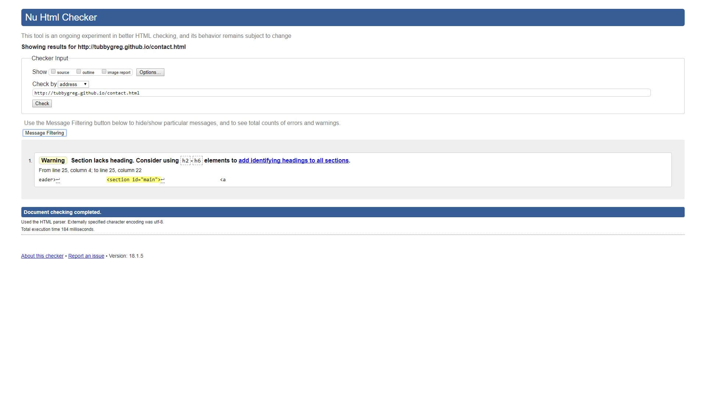

Gregory Tubby
intro
For my website, I have a website where the product is myself. I have a homepage with some content lifted from my CV. There is a contact page, and a gallery page with some photographs lifted from my Instagram. The customiser is a “design your own hockey mask” as I love hockey and I think custom goalie masks are really well designed. I’ve used plenty of media, including an embedded youtube video an plenty of images. I have used Local Web Storage to save and load on my customiser.
Web Standards
Web standards are a set of rules and guidelines created by the world wide web consortium to make the development of the code that creates websites consistently. Website Builders and Browser builders both have to use these standards so that everyone can use the web in the same way. HTML and CSS are the two main standards set by the W3C. HTML is used to define the content of the web page and CSS is used to control the layout and design. Because HTML is a markup language, if you wish to create a more interactive webpage, then another scripting language must also be incorporated. JavaScript is perhaps the most popular of such languages and it is the one I have chosen to use. Client-side scripting is not as secure as server-side scripting, but since no important data is being sent using my website, like card transactions or any personal details client-side scripting is fine. It has meant that my website is dynamic, instead of being static.
My Website is built using HTML, CSS and some JS. There are some HTML5 Elements, and CSS3 is used. HTML semantic elements I have used include an article, header, footer, nav and section. I have used border-radius, box-shadow, and web-fonts and transparency on the CSS3 side.
Interoperability
Interoperability means that the website can be used across browsers. This is achieved by using the latest web standards and also responsive design using CSS. Doing this creates the best experience for all the potential users of the website by treating them all equitably. Using the following metatag:
I was able to make the website more usable on devices with smaller screens such as tablets and mobile phones. I used media queries to make my device work well on certain devices with smaller screens. I set it so that with a maximum screen width of 799 pixels a different set of rules from the CSS is loaded. I have used relative sizing on all as many parts of my website as possible to allow the website to scale smoothly across screen resolutions.
Desktop Chrome
Desktop Edge
Desktop Internet Explorer (Legacy)
The Box-shadow doesn't work on that one
Mobile Firefox
Mobile Chrome
Canvas works on desktop, but not on Mobile

Best Practices
Using best practices makes the website easier to maintain. This would be especially important if working as part of a group of developers and designers, say where one worked on the HTML and CSS while another worked on the JavaScript. Using relative file paths and keeping javascript and CSS external is all part of this. All of my pages use the same, external CSS. All of my Javascript, CSS and Assets are kept in their respective directories. In the files where a lot of code is written out, indentation is used to make interpretation by another human easier. I have commented my JavaScript so that it can be easily understood. Each part of the code is clearly labelled and obvious variable names are used.
Validation
These validation tools compare the webpages against the world wide web consortium standards
To Begin with, I used the Google "mobile-friendly Test"
Then I used the W3 'nu' validation tool.
 All of these validation errors come from the embedded youtube video – where the code is from Google themselves.
Conclusion
To conclude the website is dynamic and responsive. It uses CSS and JavaScript to make the interface more user-friendly. There is a customisation section where the user can design a hockey goalie mask using the canvas and change the colour and weight of their drawing tool as well as save and load their designs from local storage. HTML5 and CSS3 elements have been used. The file structure used is the one recommended to us. The website is operational across a wide range of browsers and devices, although the canvas doesn’t work on mobile because the default touchmove is to scroll the web page, not draw on the canvas.
References
Google. (). Mobile-Friendly Test. Available: https://search.google.com/test/mobile -friendly. Last accessed 11 Jan 2018.
Word Wide Web Consortium. (). Nu HTML Checker. Available: https://validator.w3.org/ nu/. Last accessed 11 Jan 2018.